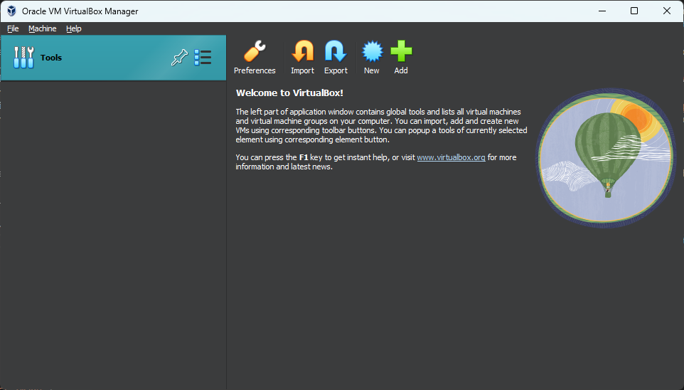

How to set up a virtual machine
If you follow this tutorial, you'll have a working virtual machine for testing on your PC.
In today's digital age, the internet is essential, but it's also fraught with risks. Malicious websites, apps that spy on you, and viruses that can disable your computer or steal your data are common threats. It can be challenging to determine which files, apps, or websites are trustworthy. This is where virtual machines (VMs) come into play.
What is a Virtual Machine
A virtual machine (VM) is a software-based emulation of a physical computer. It runs an operating system and applications just like a physical computer, but within a virtual environment. VMs are created and managed by a hypervisor, which allocates physical hardware resources to each VM, ensuring they operate independently of the host system and other VMs.
The key features of VM's are:
Isolation: Each VM is isolated from the host system and other VMs, providing a secure environment for running applications and operating systems.
Hardware Independence: VMs emulate hardware, allowing them to run different operating systems and applications regardless of the underlying physical hardware.
Flexibility: VMs can be easily created, configured, and deleted, providing flexibility for various use cases like testing, development, and deployment.
There are 2 types of hypervisor
Type 1 (Bare-Metal) Hypervisors: These run directly on the physical hardware and manage the guest operating systems. Examples include VMware ESXi and Microsoft Hyper-V.
Type 2 (Hosted) Hypervisors: These run on a host operating system and manage the guest operating systems as applications. Examples include VMware Workstation and Oracle VirtualBox.
Benefits of Using Virtual Machines
Virtual machines offer a versatile and powerful way to run multiple operating systems on a single physical machine, test software in different environments without needing multiple devices, support legacy applications by running older operating systems, enhance security by isolating potentially harmful files and applications within a VM environment.
Setting up a Virtual Machine (VirtualBox)
VirtualBox is an open source Virtual Machine program from Oracle. It allows users to virtually install many operating systems on virtual drives, including Windows, Linux, and more. Since VirtualBox runs on Windows, Linux, and Mac, the process for setting up a virtual machine is pretty much the same in each operating system.
Start with downloading and installing VirtualBox. You can download it at VirtualBox Downloads.
You will also need to download an .iso file for the operating system that you want to run in your virtual machine. For instance, you can download a Windows 10 .iso file in this link
This guide will be in a machine running Windows 11 and we will run Linux Ubunto Desktop 24.04LTS in our VM, the steps should be similar if you're using other operating system(OS) or want to run a different OS in your VM.
Instalation
Once you have you Virtual Box (VB) executable and OS iso downloaded (instructions are mentioned before) run the VB windows installer and allow the app to make changes to your device. You should be welcomed by the wizard setup, just continue by pressing next
Here you'll select the feautures you want to install and the location, you can leave them at their default selection and path and press Next.
The next part of the wizard will warn you that the instalation process will turn off your internet for some time, advance by clicking on Next, on this next page you'll be asked to install some dependecies, proceed by clicking on Yes
After clicking Install on the next page the installation should start. Once the instalation is complete the wizard asks if you want to start VB, you only need to click on Finish for the program to open.
Click on Add and give a name to your VM, pick the iso file you downloaded before, fill the rest of the fields if necessary and click on Next
On the next page you will write the login credentials and domain name you want to use on your VM
After clicking on next you should see a page where theres sliders to pick the amount of base memory and processors (also known as RAM and Threads) you want to allocate to your VM, for Windows its recomended to have a minimum of 4GB or 4096MB and 4 CPU, to allocate that ammount of resources to your VM its recomended to have 8GB of total RAM in your system and a 8 Thread CPU.
Less demanding OS's like Linux Ubunto need much less RAM and Threads to run, I will allocate 3GB of RAM and 4 Threads since my PC has 16GB of total RAM and a 12 Thread CPU.

On the next screen you will chose the ammount of storage to give to your virtual disk in your VM, for windows have at least 16GB, but more than 60GB if you want to install many programs on your VM, for linux I'm going to have 5GB
After pressing next you will be presented with a summary screen, where you can review your global settings for your VM, press Finish to complete the setup
After this the VM should open automatically, if not, click on Power On and after a bit you should be presented with your OS instalation preferences, just walk thru them and you'll eventually have you OS running on a virtual machine.